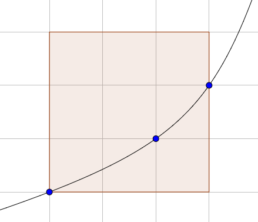

Let $F(N)$ be the maximum number of lattice points in an axis-aligned $N\times N$ square that the graph of a single strictly convex increasing function can pass through.
You are given that $F(1) = 2$, $F(3) = 3$, $F(9) = 6$, $F(11) = 7$, $F(100) = 30$ and $F(50000) = 1898$.
Below is the graph of a function reaching the maximum $3$ for $N=3$:

Find $F(10^{18})$.